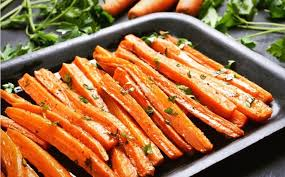
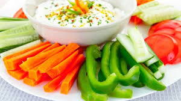
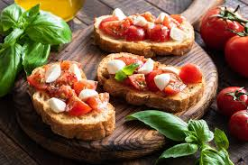
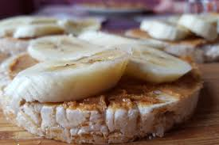
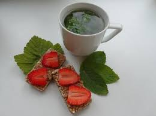

Keptos morkos
Šiltas, saldus ir maistingas užkandis.
Pjaustytos daržovės
Traškūs, spalvoti ir greiti vitaminai!
Sumuštiniai su pomidoru ir mocarela
Skonio klasika iš Italijos – greitai ir skaniai.
Trapučiai su riešutų sviestu ir bananais
Saldu, maistinga ir užteks tik trijų ingredientų.
Trapučiai su riešutų sviestu ir braškėmis
Trašku, gaivu, šiek tiek saldu – vasaros skonis.